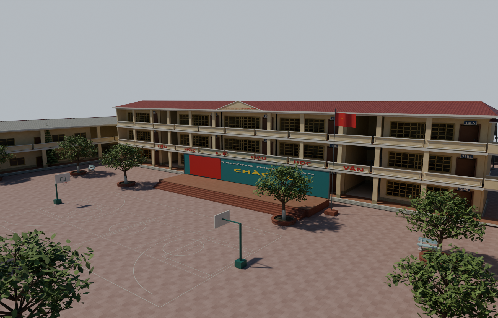
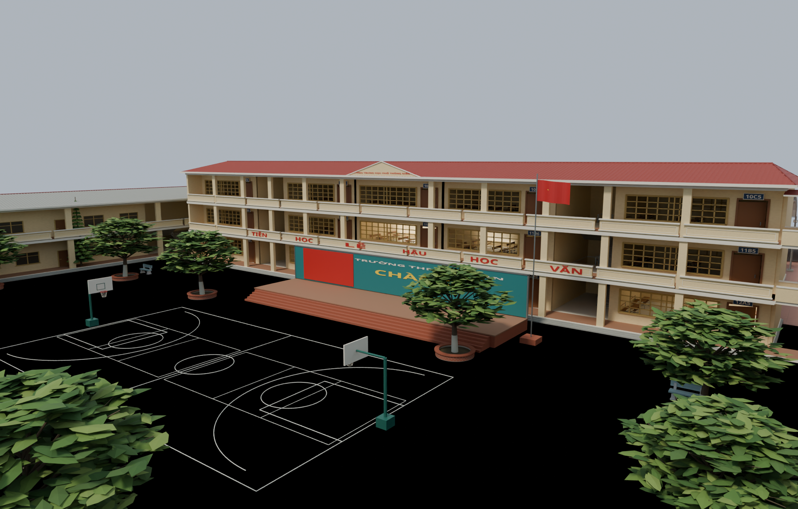

Kiến An — hoàn thiện Semi-realistic trên V2
Kéo thanh để so sánh cùng góc máy. Bên trái: trước chỉnh. Bên phải: sau chỉnh.


TrướcSauGiữ bố cục đã duyệt. Chỉnh vật liệu PBR, gạch sân, lá cây, bo cạnh và ánh sáng. Vật liệu và texture đã nhúng trong GLB; ánh sáng trời thuộc scene Blender.